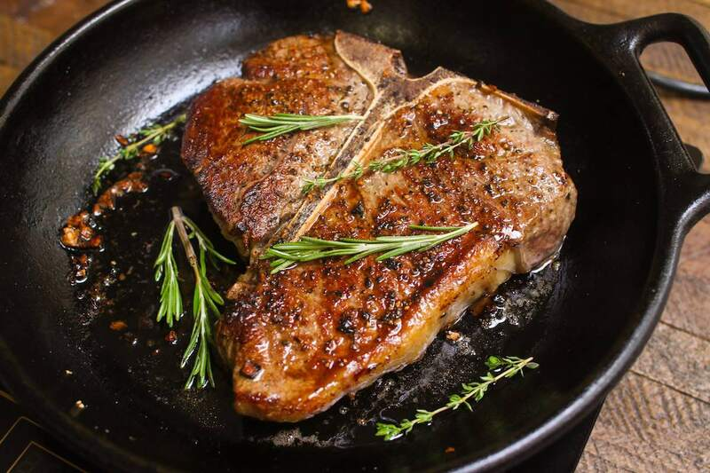

The Perfect Steak Recipe

Fantastic Steak
Tender, juicy, flavorful are all the words you want in a
perfectly cooked steak. You don’t need to visit a
fancy restaurant to enjoy a tender, juicy, mouth smacking
steak when you can cook it at home.
If you’ve never cooked steak at home, it can be intimidating,
but it’s actually simple and fun. This recipe outlines how to
cook a steak in a cast-iron skillet for a perfect steak every time.
Determining Doneness
The best way to determine doneness is with a probe thermometer since
there are many factor at play when cooking steak. Since the steak will
continue cooking after removing from the heat, follow the guide
below to get the prefect doneness level.
- For a rare steak, remove the steak from the heat
at an internal temperature of 48°C.
- For a medium-rare steak, remove the steak from
the heat at an internal temperature of 52°C.
- For a medium steak, remove the steak from the heat
at an internal temperature of 58°C.
- For a medium-well steak, remove the steak from the
the heat at an internal temperature of 62°C.
- For a well-done steak, remove from steak from the heat
at an internal temperature of 68°C.
Ingredients
- 1 ribeye or your preferred cut (at least 1 inch thick)
- 1/2 teaspoon kosher salt
- 2 tablespoons unsalted butter
- 2 cloves garlic, smashed
- 1 sprig of thyme or rosemary
Instructions
- Prepare the steak. Remove the steak from the refrigerator
about 1 hour before cooking (it would be more ideal if it was at room temp).
- Prepare the rest of the ingredients.
- Season the entire steak with salt.
- Heat the panHeat the cast-iron skillet over high heat
until it starts smoking; about 10 minutes.
- Cook the steak. Place the steak on the hot pan and cook
on the first side until it develops a crust, about a minute. Flip and cook
on the other side for 1 minute. Continue cooking and flipping for a total
of 4 minutes.
- Flavor and baste. Add the butter, garlic and herbs to the
pan. Flip the steak and tilt the pan so that the butter pools on one side.
Baste the steak with butter using a spoon. Flip and repeat. check the internal
temperature of the steak and cook to your desired level of doneness.
- Rest the steak. Transfer the steak to a plate or cutting
board and rest for at least 10 minutes.
- Carve the steak. Slice the steak across the grain and serve.